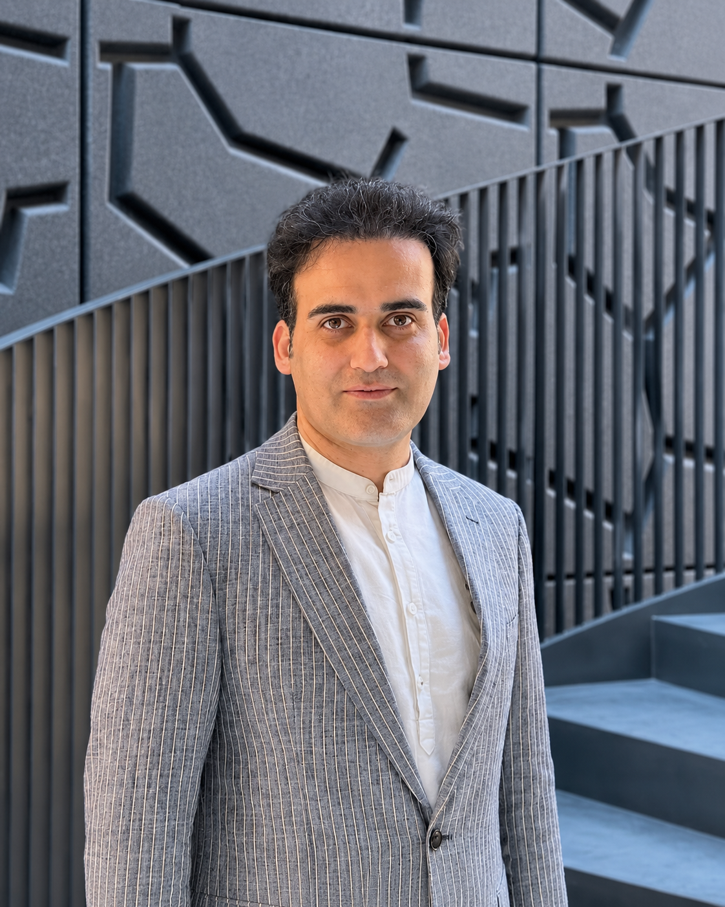

Hi, I’m
Saeid Azadifar
LLM & Foundation Models
I'm an AI researcher and engineer with a PhD in Artificial Intelligence, currently working as a Marie Skłodowska-Curie postdoctoral researcher at the University of Oulu. My work focuses on machine learning, LLMs, and foundation models. I also bring seven years of experience in software development and technical leadership in FinTech.

Open to workAbout
I develop machine-learning pipelines for physiological and behavioral data from consumer wearables. My work covers time-series foundation models, supervised contrastive learning, multimodal fusion, FAISS retrieval and in-context classification with open-weight LLMs, all trained and evaluated on CSC GPU infrastructure.
Earlier in my career I led engineering teams at Padash and Charisma Financial Group, shipping an investment app, a currency-trading platform and the reporting systems behind them. That experience shapes how I build research code: reproducible, tested and ready to hand over.
AI/ML projects
Wearable Prompt: LLMs for depression and anxiety
Benchmarked zero-shot, rule-based and few-shot prompting with Llama 3.1, Qwen 2.5 and BioMistral against conventional ML and recurrent networks for symptom classification from smart-ring data. Presented at IEEE BSN 2026.
View OuraLLM on GitHubMultimodal foundation models with retrieval
Built MOMENT-1-large representations for heart rate, HRV, activity and sleep, using supervised contrastive learning, attention pooling and 128-dimensional projections. FAISS retrieval selects examples for Llama-3.1-8B-Instruct classification, compared with retrieval-only baselines.
Wearable signals and mental health
Analyzed sleep, heart rate, HRV and physical activity from the Northern Finland Birth Cohort 1986 to study how they relate to depression and anxiety severity, with statistical models and sensitivity analyses.
See the publication on Google ScholarPDF RAG chatbot
Document question answering with embeddings, a vector store and an open-source language model.
View on GitHubAI in Sports Science
Workshop and open materials on using LLMs and wearable data in sports-science research.
View on GitHubProfessional Experience
Seven years turning business problems into working systems: from data and BI to full products with real users. Each role lists what I built myself, what I architected and what my team delivered.
Postdoctoral researcher University of Oulu
- Hands-on
- PyTorch models, FAISS retrieval and LLM pipelines on CSC GPU infrastructure, with reproducible experiments.
Technical Advisor Padash Financial Information Processing
- Advisory role
- Advise on software architecture, technical direction and digital product development alongside my postdoctoral research.
Deputy head of product development Padash Financial Group
- Led delivery
- Investment progressive web app (about 5,000 new users), company website, BPMS, management dashboards and a working-hours system, with a seven-person team.
- Architected
- Digital-transformation roadmap and software architecture across all products.
- Built the team
- Established the software function from scratch: backend, frontend, DevOps, process management and design.
Built under my leadership and live today:
Software development team lead Charisma Financial Group
- Led delivery
- Currency-trading platform for foreign-currency sell requests, from requirements to deployment, with a ten-person team.
- Hands-on
- Analytical reporting and data-collection pipelines, including crawler-based exchange-rate acquisition feeding decision-support dashboards.
- Architected
- BPMS implementation and process automation, including bot-assisted currency workflows.
BI and data specialist Tosan Intelligent Data Miners
- Analyzed
- Requirements for banking analytics, fraud detection, anti-money-laundering and risk products, later deployed in more than five banks.
- Hands-on
- Worked with the BI team on banking data warehouses and reporting.
Business process analyst Rasta Group
- Hands-on
- SQL database design, Stimulsoft management reports and Bizagi workflow implementation across more than 50 organizational processes.
Lecturer & Researcher K. N. Toosi University of Technology
- Teaching
- Taught C++ programming, machine learning, data mining, assembly language programming, software engineering, and algorithm design.
- Research
- Conducted academic research alongside teaching responsibilities.
Research
- Severity of depression and anxiety symptoms is reflected in physiological and behavioral metrics collected from a consumer-grade wearable ringBMC Medicine, 2026
- Wearable Prompt: In-Context Learning for Depression and Anxiety Prediction from Consumer Smart Ring MetricsIEEE BSN 2026, Porto
- Sleep timing irregularity in midlife and incident major adverse cardiac eventsBMC Cardiovascular Disorders, 2026 (co-author)
- Graph-based relevancy-redundancy gene selection method for cancer diagnosisComputers in Biology and Medicine, 2022
- A novel candidate disease gene prioritization method using deep graph convolutional networksBMC Bioinformatics, 2022
Skills
AI and LLMs
Python, PyTorch, Hugging Face, Llama 3.1, Qwen 2.5, BioMistral, MOMENT, fine-tuning, FAISS, retrieval-augmented classification
Infrastructure
GPU computing on CSC, Docker, model serving, MLOps, GitLab CI, GitHub Actions, Jenkins, AWS
Data and software
SQL, Pandas, NumPy, scikit-learn, .NET, React, Next.js, data pipelines, requirements analysis
Leadership
Building engineering teams, architecture decisions, delivery coordination, stakeholder communication
Certifications
- IBM Generative AI Engineering Professional CertificateIBM on Coursera · 2026 · Generative AI
- Generative AI Advance Fine-Tuning for LLMsIBM on Coursera · 2026 · LLM fine-tuning
- Generative AI Engineering and Fine-Tuning TransformersIBM on Coursera · 2026 · Transformers
- IBM AI Engineering SpecializationIBM on Coursera · 2026 · Machine learning and deep learning
- IBM AI Developer Professional CertificateIBM on Coursera · 2026 · AI application development